「最強モデル1つ」の
時代が、終わった。
2026年6月、OpenRouter の Fusion API は「どのLLMが世界最強か」という問いを過去のものにした。単一モデルのスケーリングから、複数の知能を編成する 合議制（Model Council）へ。「一人の天才に頼る時代」は終わり、「最適なチームを組む時代」が始まった。

「一人の天才」を待つ時代は、終わった。
我々はこれまで「どのLLMが世界で最も賢いか」に固執し、特定ベンダーの「一人の天才」の進化を待ち続けてきた。Fusion API はその依存を断ち切る。起きているのは、推論時に計算資源を追加投入して回答の質を数学的に高めるテストタイム・コンピューティングの実装——すなわち「合議制（Model Council）」への移行だ。
一人の天才に賭ける
特定ベンダーの「最強モデル」の更新を待ち、それに固執する。性能はモデル単体の進化に縛られる。
最適なチームを組む
推論時に計算資源を追加投入し、複数の知能を編成。数学的に回答の質を引き上げる。
知能をオーケストレーション
合議制が標準に。競争優位は「どのモデルか」ではなく「どう組み合わせるか」へ移る。
勝負どころが移動した。 高額な最新モデルのリリースを待つ必要はもうない。企業の競争優位性は「どのモデルを契約しているか」ではなく、「どう組み合わせるかというオーケストレーション・ロジック」に宿るようになった。
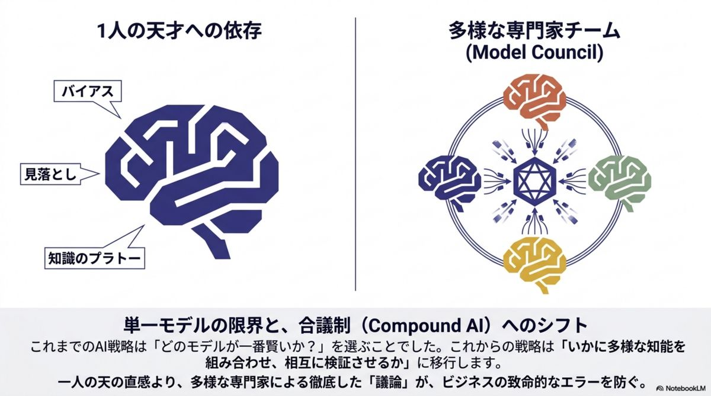
多様性（Neurodiversity）が、
客観性を生む。
Fusion API の核心は 「Neurodiversity（モデル版の神経多様性）」にある。Anthropic・Google・OpenAI・DeepSeek——異なる思想と学習データを持つモデルは、固有のバイアスとブラインドスポットを抱える。これらを並列稼働させ相互検証させることで、単一モデルでは不可能な客観性を担保する。合議は次の3層で組織的に実行される。
Model Panel
異なる開発思想のモデルが独立して思考し、回答案を並列生成。多角的な視点の母集団をつくる。
Judge Model
全回答を精査し、コンセンサス・矛盾点・独自洞察をあぶり出す最重要レイヤー。品質を左右する心臓部。
Synthesizer
分析結果に基づき、証拠能力の高い最終回答を練り上げる。アンサンブルの手間を隠蔽し「真実」だけを届ける。
知能指数を決めるのは「ジャッジの選定」だ。 ベンチマークではジャッジの品質次第で最終スコアが 10〜25ポイント変動する。さらに同一モデルを複数並べる「自己融合（Self-fusion）」でも性能が向上する事実は、「合成・統合」プロセスそのものに数学的な知能向上の価値があることを証明している。
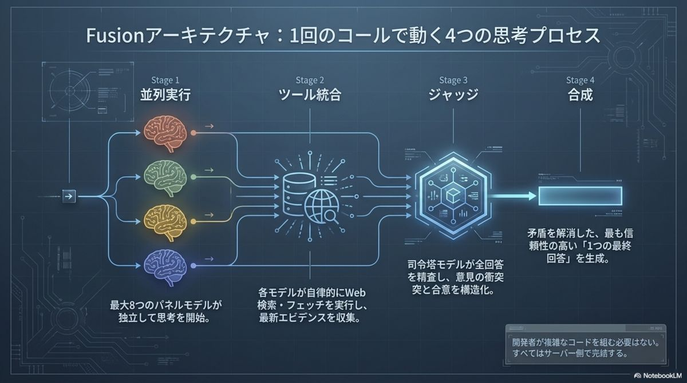
半額の「予算版チーム」が、
王者を凌駕する。
合議制の有効性は、深層リサーチ特化のベンチマーク 「DRACO（100タスク）」で証明されている。注目すべきは、安価なモデルを組み合わせた「予算版チーム」の躍進だ。最高品質はもちろん、コスト効率の観点でも構図が一変している。
個々のモデルブランドは「部品（コモディティ）」化した。 高額な最新モデルを待たずとも、現存する安価な知能を賢く編成すれば、最高峰の品質を圧倒的な投資対効果で手に入れられる。※1クエリの絶対コストは単体の4〜5倍だが、得られる知能グレード当たりのコストは実質50%削減される。
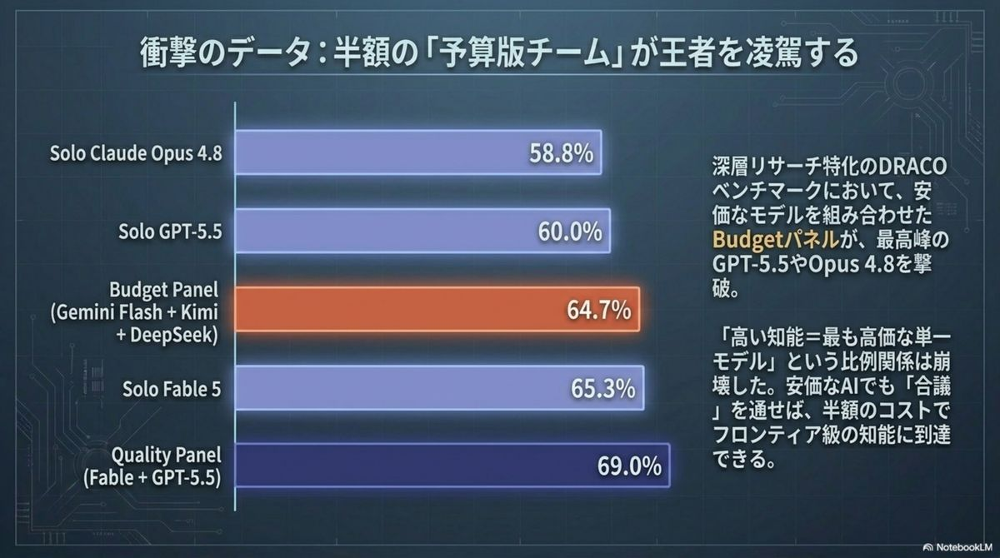
AIチームが、勝手に調べて矛盾を突く。
Fusion API の真価は知能の統合に留まらない。内部には Exa をエンジンにした強力なサーバー側ツール（openrouter:web_search / web_fetch）が標準装備され、AI自身が情報を収集・検証する「自律型リサーチャー」として機能する。一度のAPI呼び出しで、調査・矛盾チェック・レポート作成までが完結する。
標準装備の Server Tools
Exa を採用したサーバー側ツールを標準搭載。開発者は複雑な検索エンジン実装を書かずに済む。
並列で自律調査
パネル内の各モデルが必要に応じて自律的に最新情報を調査・比較し、相互に矛盾を検証する。
人間は「解釈」に集中
調査の人的工数は劇的に削減。人間はAIが提示した矛盾点の戦略的解釈という高度な意思決定へ。
「リサーチ」が一行のAPIに畳み込まれた。 複数モデルを手で比較し報告書をまとめる作業は、AIチームが勝手に調査・矛盾チェック・統合するワークフローに置き換わる。競合分析やビジネスリサーチの主導権は、人間の「問いの設計」へと上流移動する。
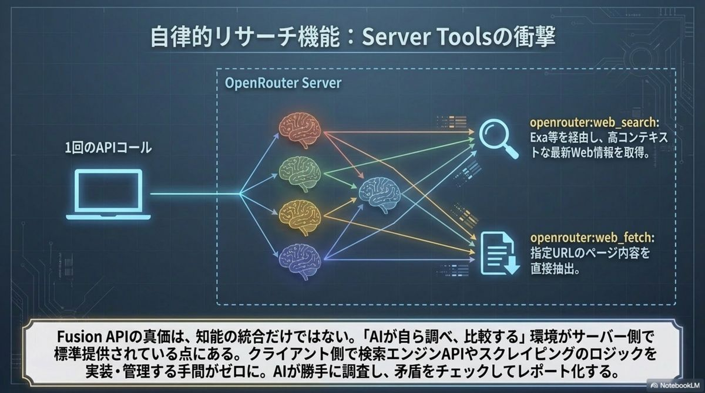
「間違いが許されない
重いタスク」こそ、主戦場。
Fusion は強力だが、2〜7倍のレイテンシと4〜5倍のコストを許容する必要がある。戦略的リーダーは 「Error-to-Cost（誤りのコスト）」比率に基づき、投入領域を峻別しなければならない。多角的な視点が価値を生むのは、間違いが高くつく領域だけだ。
間違いのコストが高い領域
- →競合分析・技術選定
- →医療・金融リサーチ
- →複雑な意思決定支援
APIコスト増を、人件費削減とリスク回避で相殺できる領域。
多角的視点が価値を生まない領域
- ×短い要約・定型メール作成
- ×リアルタイムチャット
- ×高頻度のコード補完
速度と単価が支配的で、合議のオーバーヘッドが無駄になる領域。
「適当な回答を速く」より「最高品質を確実に」。 間違いが許されないビジネスの「重いタスク」こそが Fusion の真の戦場だ。投入領域を Error-to-Cost で見極めれば、コスト増は投資へと転換する。
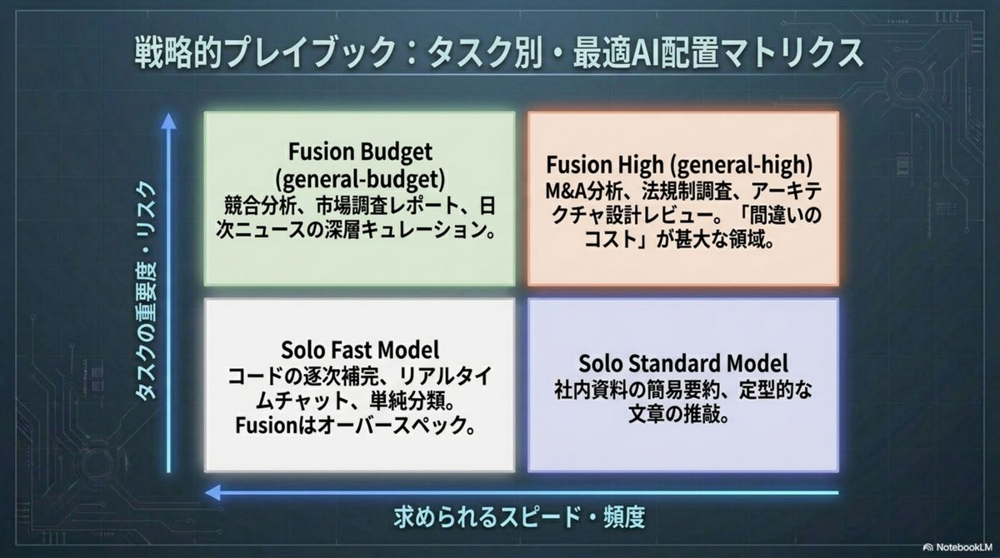
数行のコードで、未来を組み込む。
Fusion API は OpenAI互換SDK を利用できるため、既存システムへのドロップイン置換が容易だ。model="openrouter/fusion" を指定し、プリセットを選ぶだけで合議制が走り出す。運用は3つのKPIで効果を可視化する。
import openai
client = openai.OpenAI(
base_url="https://openrouter.ai/api/v1",
api_key="YOUR_OPENROUTER_API_KEY",
)
response = client.chat.completions.create(
model="openrouter/fusion", # 合議制を指定
messages=[{"role": "user",
"content": "次世代半導体市場の競合戦略を多角的に分析せよ"}],
# Pro tip: 自律判断に任せず確実にFusionを走らせる
tool_choice="required",
extra_body={"fusion": {
"preset": "general-budget" # 半額でフロンティア級
}},
)
print(response.choices[0].message.content)- 01Conflict Detection Rate。 単一モデルが見逃した誤情報・論理矛盾を、Fusion が発見・指摘した割合。
- 02Time-to-Insight 削減率。 複数モデルを手動比較し報告書をまとめていた時間と、導入後の時間差。
- 03一次回答採用率。 ジャッジの統合回答が、人の大幅修正なしに経営資料へそのまま使えた割合。
導入の摩擦はほぼゼロ。 既存の OpenAI 互換コードを数行変えるだけで合議制に移行できる。鍵は preset の選定（budget で半額・フロンティア級）と、tool_choice="required" による確実な実行制御だ。
競争力は 「どのモデルか」ではなく、The AI Orchestration Era — 2026·06·16
「どう組み合わせるか」に宿る。
オーケストレーション、原典より。
本スライドの元となったブリーフィング資料の主要図版。合議の機構・データ・戦略・実装を、原典のビジュアルで俯瞰する。
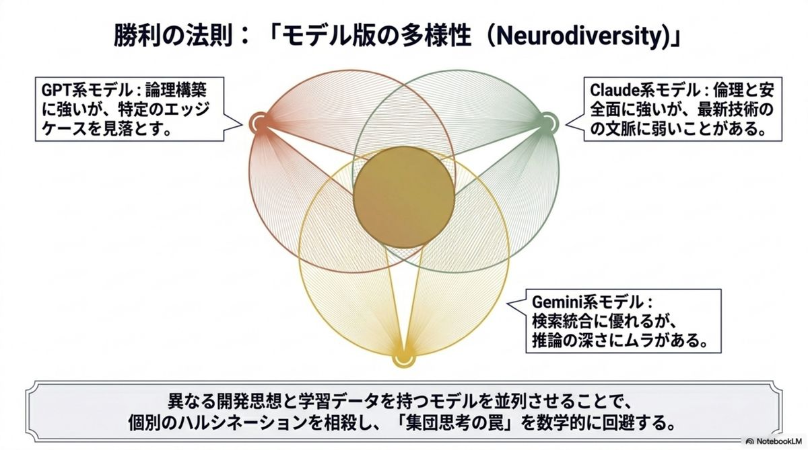
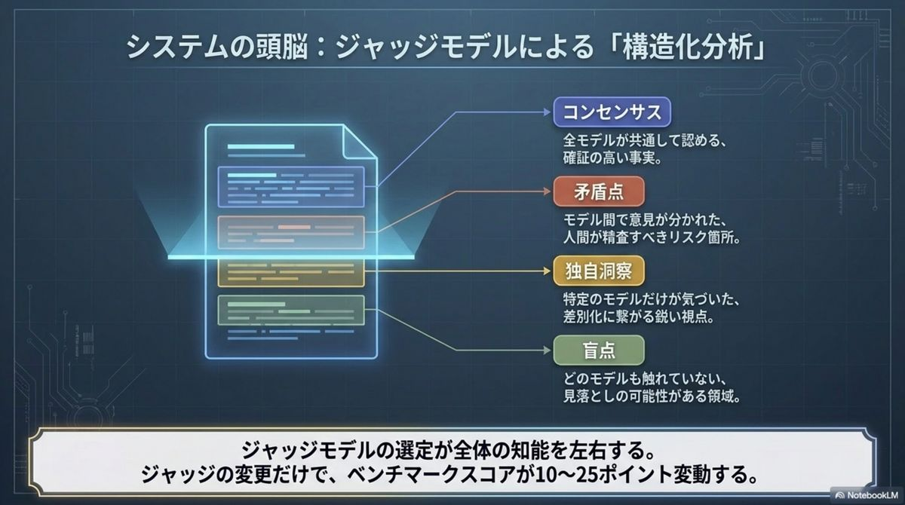
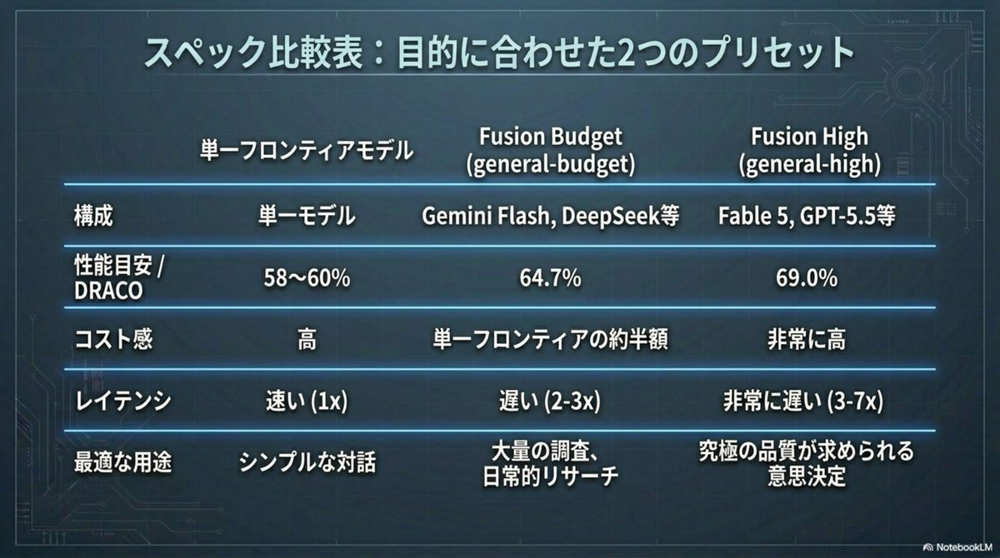
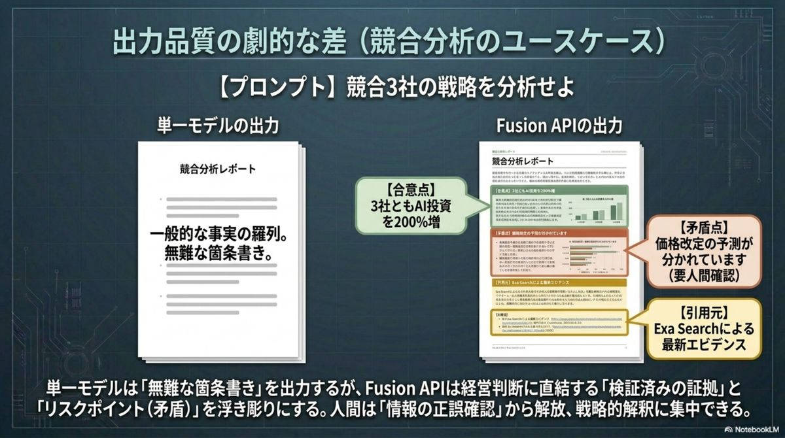
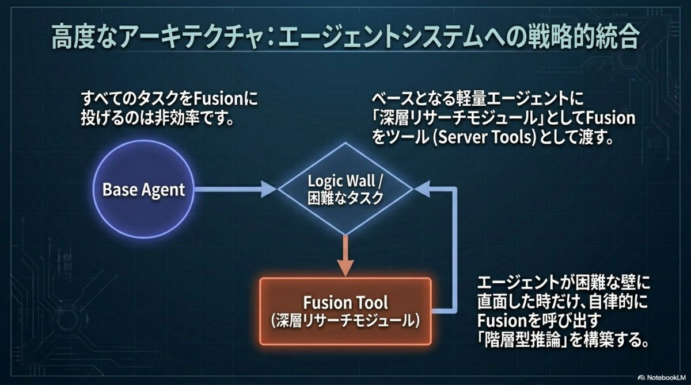
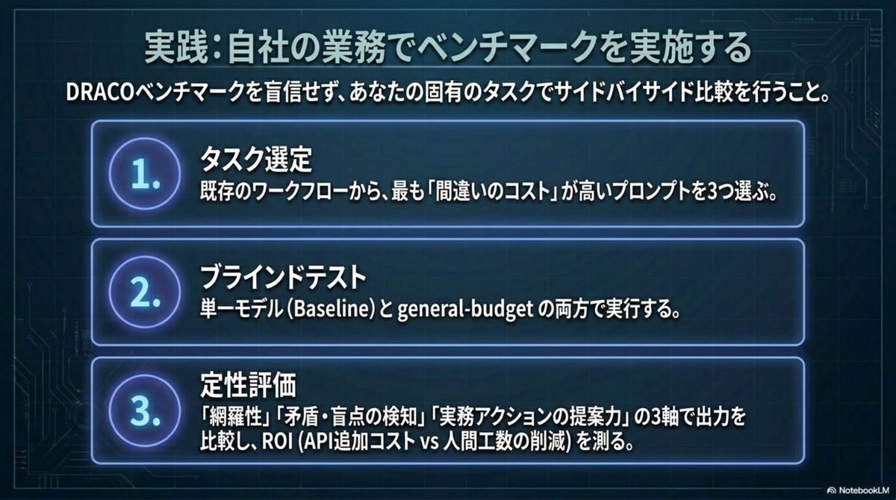
出典と関連リファレンス。
本スライドは OpenRouter Fusion API をめぐる解説。ベンチマーク値・プリセット仕様は各一次ソースでの裏取りを推奨する。